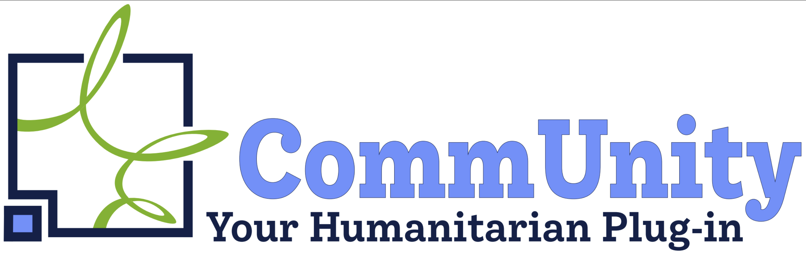
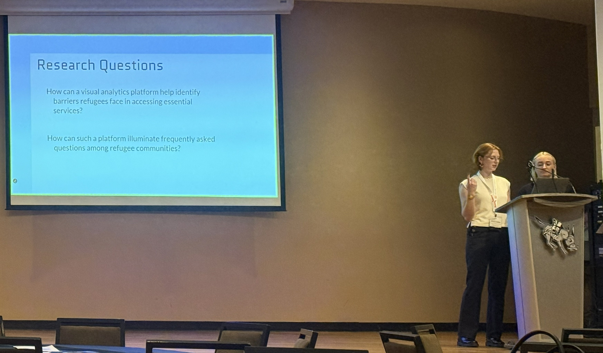
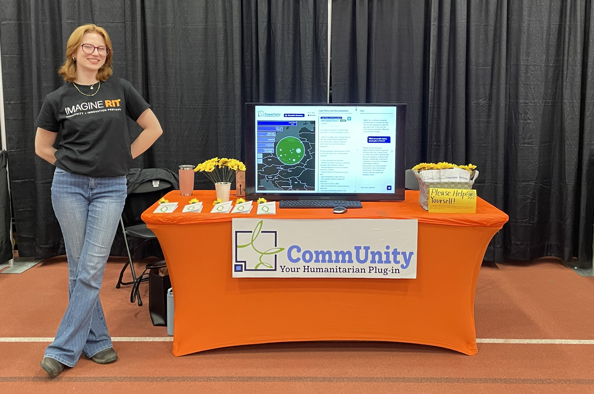

In crisis situations, humanitarian organizations rely on local, affected people for intelligence.
CommUnity leverages social media sentiment analysis of Telegram communities to democratize which voices are heard. However, social media data is open source, unstructured, mutilingual and deeply nuanced, and most missions do not have the resources to process it effectively.
CommUnity transforms that data into actionable humanitarian intelligence, providing professionals with real-time, critical insights so that aid can be provided efficiently and effectively.
AI and Open Data Consultancy to the International Organization for Migration
The original goal of this project was to explore the application of emerging AI technologies in improving humanitarian response efforts.
I contributed to the literary review, software development, and data analysis components of our first prototype, 'Aegis,' as a member of a 3 person team.
We conducted a user study of humanitarian professionals to understand their needs and how they would use the tool.
One of the notable findings from the study was that humanitarian professionals were hesitant to trust AI-generated insights, and they preferred to have access to the raw data and the ability to verify the results themselves.
USAID funding cuts
Our department recieved stop work orders, and I gained experience in grant writing as we navigated finding outside funding to continue the project.
We are greatful to the RIT College of Liberal Arts for providing the resources to finish the original prototype.
However, this fundamentally changed the scope of the project. We had to learn how to develop a product that would be sustainable in the face of unreliable funding cycles and resource contraints.
IEEE Global Humanitarian Technology Conference
'AI-Driven Data Fusion for Humanitarian Visual
Analytics: Integrating Multimodal Social Media
Insights on Ukrainian Refugee Displacement'

We had the opportunity to present our work at the IEEE GHTC in Golden CO, 2025.
Project Manager, Developer, and Data Analyst
The second prototype, 'CommUnity' was created to address the limitations of the first prototype and improve the user experience. I managed a diverse team of students who focused on AI training, server maintenance, and technical documentation for this year-long Senior Capstone project.
I developed the user interface and data analysis components of the prototype, and created the brand identity and marketing materials.
This prototype was designed to be free of cost and open source, so that humanitarian organizations can use it without financial barriers. The user interface is designed to build trust with users through local hosting and by providing easy access to the original Telegram data.
